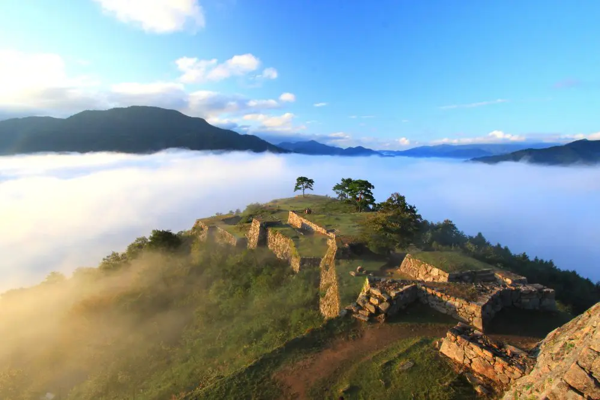

關西 10 天行程
家庭討論版 · 京都・竹田城雲海・琵琶湖 · 10 天 9 夜
日期暫定：11/20–11/29
Hub 1 京都 ×3 晚 市區不租車，計程車／地鐵
11/20–11/23
Day 1（11/20） 抵達關西 → 古都安頓
Haruka 直達京都 → check-in
Day 2（11/21） 清水寺・東山
清水寺建議早上 07:30 到


Day 3（11/22） 嵐山 → 京瓷美術館
竹林・天龍寺・福田美術館；青木淳改建的現代建築＋岡崎公園

Hub 2 竹田城／朝來 ×3 晚 離京取車自駕，兵庫雲海據點
11/23–11/26
Day 4（11/23） 移動日：京都 → 美山 → 竹田城
京都→美山 1h20 → 朝來 1h55（總車程約 3h14）

Day 5（11/24） 竹田城跡・立雲峽雲海
日本馬丘比丘；雲海清晨看天氣

Day 6（11/25） 城崎溫泉 或 出石蕎麥
城崎 40m ／ 出石 30m
Hub 3 琵琶湖 ×3 晚 環湖自駕往返
11/26–11/29
Day 7（11/26） 移動日：朝來 → 琵琶湖
傍晚順遊 La Collina 近江八幡 或 白鬚神社

Day 8（11/27） MIHO MUSEUM（全天）
貝聿銘，核心亮點

Day 9（11/28） 佐川美術館・水杉・白鬚神社
擇二，看腳程

返程
Day 10（11/29） 琵琶湖 → 關西機場 → 返台
車程約 1.5–2h